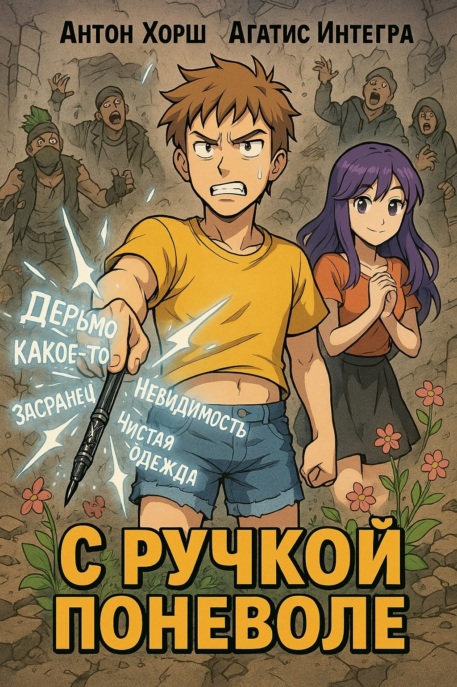

Мир изменился после Суперкатаклизма, наделив людей странными, часто бесполезными суперспособностями. Саня, обычный геймер, неожиданно оказывается в этом безумном мире с таинственной ручкой, которая буквально воплощает написанное. Но всегда с подвохом.

Теперь Сане предстоит разобраться с правилами нового мира, не создавая ещё больше проблем. Это сложнее, чем кажется: ручка исполнительная, но буквальная. Напишешь «удар молнии» — получишь молнию. Напишешь «удар молнии в врага» — получишь её в потолок. Напишешь «удар молнии в врага точно» — попадёшь в себя.
А ещё в этом мире каждый второй — боярин с фамильным трактиром или родовым гербом, и каждый первый смотрит на пришельца со старым нокиа в кармане как на возможность поднять статус. Саня просто хотел вернуться домой. А может, и нет. Если, конечно, дома ещё есть свет.